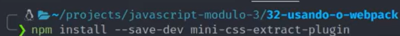

NPM - Babel - Webpack
NPM - Node Package Manager
Um gerenciador de pacotes que serve para compartilhar, baixar e gerenciar os modulos.
Selecionar a pasta e inicializar
Para inciar, basta no terminal inserir o comando... cd + a pasta desejada.

E para inciar um projeto usamos o comando npm init, assim vamos estar falando para o npm que queremos inicar um projeto nessa página.
E então ele pede algumas informações como o nome do projeto, versão, descrição, ponto de entrada, comando de teste, repositório git, palavras chaves, autor e licença, precisa confirmar as informações com um yes.
Podemos também utilizar o comando init -y para ele pular toas essas perguntas e clocar a resposta padrão.
depois disso ele vai criar um arquivo package.json que vai ser o arquivo principal do nosso projeto, sempre que fomos instalar alguma coisa, vai ficar salvo no arquivo.
instalar
Para instalar, podemos usar como referenia o site do npm, procurar pela aplicação que queremos e usar o comando bem simples para instalar.

Essa imagem diz que foi instalado 1 pacote e foi auditado 2 pacotes e foi encontrado 0 vunerabilidade.
Após isso ele vai criar outro arquivo chamado package.lock que ele irá fazer uma trava nas versões das aplicações que instalamos, e ele criou também uma pastas onde vai ficar os arquivos que baixamos.
Como usar
Pra usar é importante que o arquivo esteja dentro da pasta do projeto, no caso da nova pasta que foi criada. E temos que usar como se fossemos importar um modulo usando o commonJS, como na imagem abaixo.
E para verificar usamos nesse exemplo o terminal e a saída que obtivemos foi...
Dependencias de desenvolvimento
Dependencia de desenvolvimento, é usada somente para ajudar no desenvolvimento mas não para ser salva junto com o projeto, para que seja incluido somente o que for necessário.
Dependencias globais
Pra instalar dependencias globais, isso significa que não vai instalar em qualquer projeto mas sim na sua máquina, como se fosse um programa.
Desisntalar
Para remover basta usar o comando com o na imagem abaixo.
Scripts no NPM
Estão no arquivo package json, entre aspas e podemos executar qualquer outro comando, é como se fosse um atalho.
Podemos colocar um script para executar um npx como no primeiro exemplo, ou para executar qualquer comando grande criando um atalho, no segundo exemplo estar criando um atalho para executar o código.
E para usar o atalho, basta colocar npm run e o nome do script.
NPX
Serve para executar na linha de comando os pacotes que instalamos, nem todos os pacotes vão ter executaveis, na documentação dos pacotes vai dizer se ele é executavel ou não e quais os comando que podem ser executados. Outra maneira de vermos é asbrindo a pasta node_modules e vamos encontrar uma pasta chamada .bin e dentro dela foi criado um atalho.
Para usar basta colocar o npx e o nopme do arquivo, assim como no exemplo abaixo.
Convertendo JSON
Babel
Babel é um compliador de JavaScript para JavaScript, ele faz a conversão do codigo atual para versões mais antigas, fazendo assim a aplicação ter mais acessibilidade para outros navegadores.
Para instalar o babel, podemos substituir o --save-dev por D e depois passar o nome dos pacotes que vamos precisar depois do @, então vamos instalar o pacote principal, ou seja, o core, e vamos instalar o cli que é a ferramenta de linha de comando e o preset-env vai configurar o babel automaticamente pra gente.
Para usar o babel basta inserir o comando como no exemplo, mas ele irá converter esse codigo em uma conversão simples, pois ainda não usamos o preset-env e essa conversão será mostrada no terminal.
Para criar um arquivo separadamente podemos iserir o comando como no exmeplo abaixo, assim estamos informando que queremos criar um arquivo através do nosso arquivo index.js, passamos o nome do arquivo como dist de distribuição e assim ele cria um arquivo na mesma pasta do nosso arquivo, mas ainda não foi convertido para uma versão amis antiga.
Para converter basta passarmos o mesmo comando como no exemplo acima e informar que queremos usar o preset, no caso presets no plural, pois pode ser aceito mais de um preset, basta separar por vírgula e devemos informar que tudo isso é igual ao pacote que presents que baixamos. Com isso ele já consegue fazer a conversão automaticamente, mudando por exemplo as variáveis de let e const para var.
Para facilitar e converter vários arquivos de uma vez, podemos passar o comando... npx babel e o nome da pasta onde estão nossos arquivos --out - dir que é de diretório dist e vamos usar o preset do babel. Assim estamos falando... Pegue todos os arquivos desta pasta e crie uma pasta com o nome de dist e converta usando o preset. Depois disso ele cria uma pasta e converte todos os arquivos que estavam dentro daquela principal pasta.
Para configurar o babel basta criar um arquivo de configuração com o mesmo nome que está no exemplo.
Então vamos exportar um objeto, e passar como chaves o que deseja configurar, nesse caso o presets, e cria um array e dentro desse array se cria outro array e coloca uma string com o nome do preset, o present funciona dessa forma, para mais configurações é importante olhar na documentação.
Webpack
Sua principal função é ler arquivo principal e verificar o que é necessário para funcionar a aplicação, verificando quais dependencias estão sendo usados no projeto e deixando a aplicação estática.
Para instalar o webpack é simples, somente siga o exemplo.
Agora vamos usar um módulo que já conhecemos, o dayjs
Usamos da seguinte forma.
Ele comprimiu todo o código em uma unica linha, para deixar mais leve o arquivo, nesse exemplo, no html foi inserido o arquivo main.js mas esse arquivo não foi criado, depois que o webpack foi requerido, ele criou o arquivo main na mesma pasta do html.
Ele usa por padrão o modo de produção, que é o produto final, mas ele tem o modo desenvolvimento.
Configurando o webpack
Entrada
Para consfigurar o webpack é bem parecido com o babel, temos um arquivo padrão que podemos criar, dentro dele vamos criar um objeto chamado entry, e depois vamos indentificar entrada, ou seja, o arquivo principal e vamos fazer isso passando uma chave com o nome desejado e o caminho da nossa entrada. A partir dai ele vai criar um arquivo principal com o nome que nós escolhermos, deixando de usar o nome padrão que é main.
Mode
Quando modificamos o mode para developers, fica melhor de ser entendido, ele não faz o enpacotamento.
Saída
Para configurar a saída vamos importar o modulo path.
Depois vamos configurar pra nossa saida ir para o caminho que desejamos, evitando assim uma desorganização. vamos usar o path.resolve para ele calcular o caminho absoluto, vapssamos o parametro __dirname para ele buscar o caminho da pasta que estamos e o segundo parametro é o que eu quero incluir no caminho.
Podemos mudar o nome do arquivo usando o filename, que é muito útil quando temos mais de uma entrada, colocando o [name]. para que ele possa criar mais de um arquivo com nomes diferentes.
Usando o babel com o webpack
Para integrar e não precisar fazer o procedimento no babel e depois passar tudo para o webpack, podemos usar o babel direto no webpack, utilizando o loader dele, babel-loader, assim encurtamos esse processo. Para isso basta instalar o babel loader e depois ir nas configurações do webpack e configurar o loader.

Loaders
Serve para fazer transformações nos modulos.
Exemplo de louder que vamos ver é um loader que permite inserir CSS nos modulos de JavaScript, assim o CSS vai estar incluso no arquivo principal.
Para instalar é bem simples, basta seguir o comando do exemplo.
Como os loaders servem para transformar os modulos, vamos no arquivo de configurações e chamar o objeto module, e dentro dele vamos colocar as regras que queremos que ele siga. A primeira propriedade que é a teste, é que diz em que arquivos ele vai executar o loader. A forma de procurar o arquivo no teste é usando expressões regulares, que é um meio de procurar uma string, nesse caso queremos encontrar o .css mas para isso, precisamos colocar a contra barra na frente para que ele posssa ler o ponto e o cifrão no final pra dizer que esta string vai estar no final do arquivo. A segunda propriedade use, serve para dizer qual loader vai ser usado, sendo pasado como string.
Precisamos importar o arquivo css para o JavaScript principal, como no exemplo.
E agora basta rodar o webpack da seguinte maneira.
Plugins
O plugin que vamos ver pega o CSS que está incluso no webpack e gerar um arquivo separado para ele na saída.
Para instalar, só usar o comando como no exemplo.

Depois importar no arquivo de configuração, desta forma:
E incluir no objeto de configuração, passando a palavra new na esquerda e os parenterses como se fosse uma função, depois tiramos o style loader e colocamos no lugar o plugin, que ele vai ser seu próprio loader.
Para criar o arquivo basta fazer como nos outros exemplos, só executar o webpack.
Depois disso ele vai criar um arquivo index.css separado, na pasta dist para poder inserir no html, lembrando que tem que haver um link css no html.
Webpack-dev-server
Atua como um servidor para rodar as aplicações, assim como o live server, uma vantagem é que se atualizarmos o codigo, ele já salva e roda automaticamente sem precisar encapsular novamente com o webpack.
Para instalar basta seguir o comando do exemplo.
Mas precisamos fazer uuma configuração para que ele possa rodar na porta correta, precisamos novamente importar o path, e passar o caminho do nosso diretório estático, o compress true significa que ele vai comprimir como se fosse um arquivo rar ou zip e a port é onde podemos escolher que porta vamos usar nop servidor.
E quando rodarmos o comando ele vai rodar junto o webpack e para rodar esser servidor usamos o seguinte comando:
Depois disso ele vai mostrar a porta que podemos acssar e até mesmo ele vai nos mostrar um link.